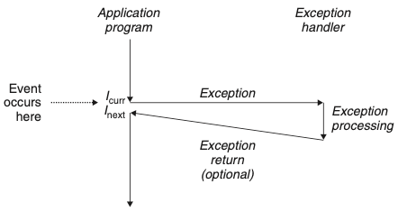
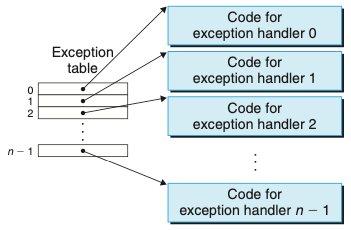
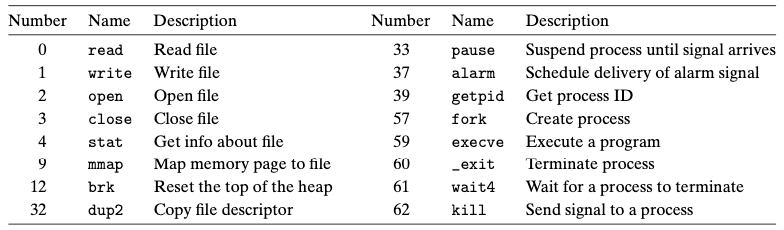
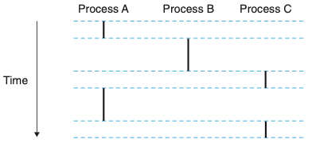
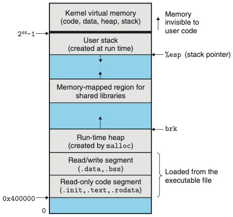
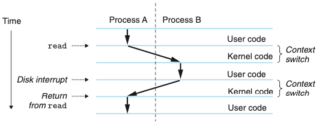
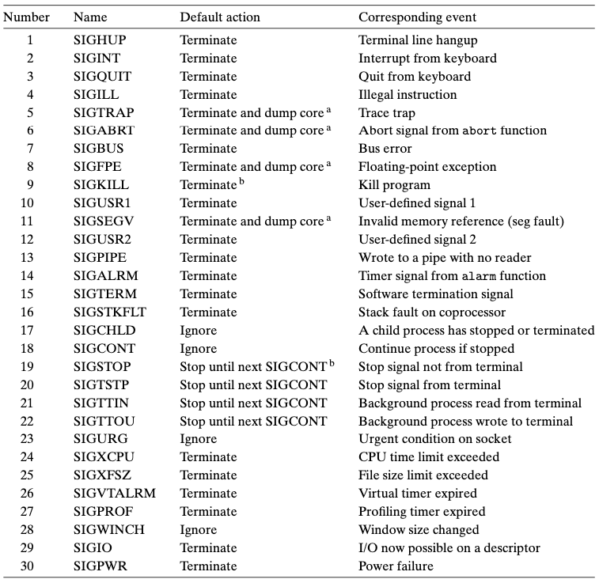

Chapter 08. 예외적인 제어흐름
- 프로세서에서 전원을 처음 공급하는 시점부터 전원을 끌 때까지 프로그램 카운터는 연속된 값들을 가정한다.
- 인스트럭션 I에 대응되는 주소가 ak -> ak+1 로의 전환은 제어이동이라고 부른다.
- 이러한 제어이동의 배열은 제어흐름 또는 프로세서의 제어흐름이라고 부른다.
- 프로그램의 실행과는 반드시 관련되어 있지 않은 시스템 상태의 변화에도 반응할 수 있어야 한다.
- 현대의 시스템들은 갑작스런 변화를 만드는 방법으로 이러한 상황에 반응한다.
- 일반적으로 이와 같은 급격한 변화를 예외적인 제어흐름exceptional control flow(ECF)라고 한다.
- ECF의 중요성
- ECF는 운영체제가 입출력, 프로세스, 가상메모리를 구현하기 위해 사용하는 기본 메커니즘이다.
- ECF를 이해하면 어떻게 application들이 운영체제와 상호작용하는지를 이해할 수 있다.
- ECF는 컴퓨터 시스템에서 동시성을 구현하는 기본 메커니즘이다.
- ECF를 이해하면소프트웨어적인 예외상황이 어떻게 동작하는지 이해할 수 있다.
7장까지는 시스템에 대한 application이 하드웨어와 어떻게 상호작용하는지에 관한 것이었다. 98장은 application이 운영체제와 어떻게 상호작용하는지 배우게 되는 측면에서 전환점이라고 볼 수 있다.
- 컴퓨터 수준에 존재하는 ECF의 다양한 형태
- 하드웨어와 운영체제의 교차점에 놓인 예외
- application에게 운영체제 내부로 엔트리 포인트를 제공하는 예외인 시스템콜
- application과 운영체제의 교차점에 위치한 프로세스와 시그널
- 비지역성 점프 - ECF의 응용수준
8.1 예외상황
- 예외상황은 부분적으로는 하드웨어와 운영체제에 의해서 구현된 예외적인 제어흐름의 한가지 형태다.

- 위의 그림은 예외상황의 기본 아이디어다.
- 프로세서가 이벤트(상태 변화)가 발생했다는 것을 감지하면, 예외 테이블이라고 하는 점프 테이블을 통해서 이 특정 종류의 이벤트를 처리하기 위해 특별히 설계된 운영체제 서브루틴(예외처리 핸들러)으로 간접 프로시저 콜을 하게 된다.
- 예외처리 핸들러가 처리를 끝마치면, 다음 세 가지 중의 한 가지 일을 발생한다.
- 핸들러는 제어를 현재 인스트럭션으로 돌려준다.
- 핸들러는 제어를 다음 예외상황이 발생하지 않았더라면 다음에 실행되었을 인스트럭션으로 돌려준다.
- 핸들러는 중단된 프로그램을 종료한다.
8.1.1 예외처리
- 한 시스템 내에서 가능한 예외상황의 종류마다 중복되지 않는 양의 정수를 예외번호로 할당하고 있다.
- 시스템 부팅 시, 운영체제는 예외 테이블이라고 하는 점프 테이블을 할당하고 초기화해서 엔트리 k가 예외상황 k에 대한 핸들러의 주소를 갖는다.
- 런타임에 프로세서는 이벤트가 발생했다는 것을 감지하고, 대응되는 예외번호 k를 결정한다.
- k를 통해서 간접 프로시저 콜을 하는 방법으로 예외상황을 발생시킨다.
- 예외번호는 예외 테이블에서 인덱스이며, 이 테이블의 시작 주소는 ‘예외 테이블 베이스 레지스터’라는 특별한 CPU 레지스터에 저장되어 있다.

-
위의 그림은 예외테이블이다.
-
예외상황과 프로시저 콜의 차이점
- 프로시저 콜: 스택에 리턴주소 푸시, 예외상황: 현재 또는 다음 인스트럭션
- 핸들러가 리턴할 때 중단된 프로그램을 다시 시작하기 위해 스택 상에 추가적인 프로세서 상태를 푸시한다.
- 모든 아이템들은 사용자 스택 위가 아니라 커널 스택 상에 푸시된다.
- 예외 핸들러는 ‘커널 모드’에서 돌아간다.
8.1.2 예외의 종류
- 예외상황은 네 가지 종류를 구분할 수 있다.
- 인터럽트
- 트랩
- 오류fault
- 중단abort
인터럽트
- 프로세서 외부에 있는 입출력 디바이스로부터의 시그널의 결과로 비동기적으로 발생한다.(특정 인스트럭션을 싫애해서 발생한 것이 아니라는 의미)
- 핸들러가 리턴할 때, 제어를 다음 인스트럭션으로 돌려준다.
인터럽트를 제외한 나머지 예외의 종류들은 동기적으로 일어난다.
트랩과 시스템 콜
- 의도적인 예외상황으로, 어떤 인스트럭션을 실행한 결과로 발생한다.
- 트랩 핸들러는 제어를 다음 인스트럭션으로 리턴한다.
- 트랩의 가장 중요한 사용은 시스템콜이라고 알려진 사용자 프로그램과 커널 사이의 프로시저와 유사한 인터페이스를 제공하는 것이다.
- 시스템 콜은 ‘커널 모드’에서 돌아가며, 이로 인해 커널 내에서 정의된 스택에 접근하며, 특권을 가진 인스트럭션을 실행할 수 있도록 해준다.
오류(fault는 error와 다르다.)
- 오류는 핸들러가 정정할 수 있을 가능성이 있는 에러 조건으로부터 발생한다.
- 핸들러가 에러 조건을 정정한다면, 제어를 오류를 발생시킨 인스트럭션으로 돌려주어 거기서부터 재실행한다.
- 정정하지 못한다면, 커널 내부의 abort 루틴으로 리턴해서 프로그램을 종료한다.
중단 abort
- 중단 핸들러는 절대로 응용프로그램으로 제어를 리턴하지 않는다.
8.1.3 리눅스/x86-64 시스템에서의 예외상황
오류와 중단
- 나누기 에러: 0으로 나누려할 때
- 일반 보호 오류: 프로그램이 가상메모리의 정의되지 않은 영역을 참조하거나 read-only를 쓰려고 하기 때문에 발생
- 페이지 오류: 가상메모리 페이지 오류
- 머신 체크: 오류 인스트럭션을 실행하는 동안에 검출된 치명적인 하드웨 에러의 결과로 발생
시스템 콜
- 리눅스는 파일을 읽거나 쓸 때, 또는 새로운 프로세스를 만들 때 응용프로그램이 사용할 수 있는 수백 개의 시스템 콜을 제공한다.
- x86-64 시스템에서 시스템 콜은 syscall이라고 부르는 트랩 인스트럭션을 통해서 제공된다.

- 위의 그림은 리눅스 x86-64 시스템의 주요 시스템 콜
8.2 프로세스
- 예외상황은 프로세스 개념을 운영체제 커널이 제공할 수 있게 하는 기본 구성 블록이다.
- 프로세스의 고전적인 정의는 실행 프로그램의 인스턴스이다.
- 시스템 내의 각 프로그램은 어떤 프로세스의 문맥context에서 돌아간다.
- 사용자가 실행 목적파일의 이름을 쉘에 입력해서 프로그램을 돌릴 때마다 쉘은 새로운 프로세스를 생성하고, 실행 목적파일을 이 새로운 프로세스의 문맥에서 실행한다.
- 프로세스가 application에 제공하는 주요 추상화
- 프로세서를 혼자서 사용한다는 착각을 제공하는 독립적 논리 제어 흐름
- 혼자서 메모리 시스템을 가진다는 착각을 제공하는 사적 주소공간
8.2.1 논리적인 제어흐름
- 논리흐름
- 프로그램과 동적으로 런타임에 링크된 공유 객체 내의 인스트럭션들에게 일련의 프로그램 카운터 PC 값들이 대응된다는 것을 관찰할 수 있다.
- 이러한 PC 값들의 배열을 논리적 제어흐름 또는 논리흐름이라고 부른다.

- 위의 그림은 논리적 제어흐름이다.
- 하나의 프로세서를 사용해서 여러 프로세스들이 교대로 돌아간다.
8.2.2 동시성 흐름
- 논리흐름은 컴퓨터 시스템 내에서 여러 가지 다른 형태를 갖는다.
- 예외 핸들러, 프로세스, 시그널 핸들러, 쓰레드, 자바 프로세스는 모두 논리흐름의 예다.
- 자신의 실행시간이 다른 흐름과 겹치는 논리흐름을 동시성 흐름이라고 부른다.
- 동시성: 공동으로 실행되는 흐름의 일반적인 현상
- 멀티태스킹: 프로세스가 다른 프로세스들과 교대로 실행된다는 개념
- 타임 슬라이스: 프로세스가 자신의 흐름 일부를 실행하는 매 시간 주기
두 개의 흐름이 서로 다른 프로세서 코어나 컴퓨터에서 동시에 돌아간다면, 이것은 병렬 흐름 이라고 한다.
8.2.3 사적 주소공간
- 프로세스는 각 프로그램에 자신이 시스템의 주소공간을 혼자서 사용한다는 착각을 불러일으킨다.
- 프로세스는 각 프로그램에 자신만의 사적 주소공간을 제공한다.
- 이 공간의 특정 주소에 연결된 메모리의 한 개의 바이트가 일반적으로 다른 프로세스에 의해서 읽히거나 쓰일 수 없다는 의미로 이 공간은 사적이다.

- 위의 그림은 프로세스 주소공간이다.
8.2.4 사용자 및 커널 모드
- 운영체제가 완벽한 프로세스 추상화를 제공하기 위해서 프로세서는 응용프로그램이 접근할 수 있는 주소공간 뿐만 아니라 응용프로그램이 실행할 수 있는 인스트럭션들을 제한하는 메커니즘을 제공해야한다.
- 커널 모드에서 돌고 있는 프로세스는 인스트럭션 집합의 어떤 인스트럭션도 실행할 수 있으며, 시스템 내의 어떤 메모리 위치도 접근할 수 있다.
- 예외가 발생해서 제어가 예외 핸들러로 넘어가면, 프로세서는 사용자 모드에서 커널 모드로 변경한다.
- 핸들러는 커널 모드에서 돌아간다.
8.2.5 문맥 전환
- 운영체제 커널은 문맥 전환context switch 이라고 알려진 예외적인 제어흐름의 상위수준 형태를 사용해서 멀티태스킹을 구현하고 있다.
- 커널은 각 프로세스마다 컨텍스트를 유지한다. 컨텍스트는 커널이 선점된 프로세스를 다시 시작하기 위해서 필요로 하는 상태다.

-
위의 그림은 프로세스 문맥 전환의 분석이다.
- 스케줄링
- 커널은 프로세서가 실행되는 동안의 어떤 시점에 현재 프로세스를 선점하고 이전에 선점된 프로세스를 다시 시작할 것을 결정한다
- 스케줄러라고 불리는 커널 내부의 코드에 의해 처리된다.
- 커널이 실행할 새 프로세스를 선택할 때 커널이 그 프로세스를 스케줄 했다고 말한다.
- 문맥 전환
- 커널이 실행할 새 프로세스를 스케줄한 후에 현재 프로세스를 선점하는 것을 말한다.
- 문맥 전환의 수행 절차
- 현재 프로세스의 컨텍스트를 저장한다.
- 이전에 선점된(일시적으로 정지된) 프로세스의 저장된 컨텍스트를 복원한다.
- 제어를 이 새롭게 복원된 프로세스로 전달한다.
8.3 시스템 콜의 에러 처리
- Unix의 시스템 수준 함수가 에러를 만날 때 이들은 대개 -1을 리턴하고, 전역 정수 변수인 errno를 세팅해서 무엇이 잘못되었는지를 나타낸다.
8.4 프로세스의 제어
- Unix는 C 프로그램으로부터 프로세스를 제어하기 위한 많은 시스템 콜을 제공한다.
8.4.1 프로세스 ID 가져오기
-
각각의 프로세스는 고유의 양수 프로세스 ID(PID)를 가진다.
- getpid 함수는 호출하는 함수의 PID를 리턴한다.
- getppid 함수는 자신의 부모의 PID를 리턴한다.
8.4.2 프로세스의 생성과 종료
- 프로그래머의 관점에서 프로세느는 세 가지 상태가 존재한다.
- 실행중 running: 프로세스는 CPU에서 실행하고 있거나 실행을 기다리고 있다. 궁극적으로 커널에 의해서 스케줄될 것이다.
- 정지 stopped: 프로세스의 실행은 정지한 상태이고 스케줄되지 않는다.
- 종료 terminated: 프로세스는 영구적으로 정지된다.
- exit 함수는 종료 상태 status로 프로세스를 종료한다.
- fork 함수는 부모 프로세스가 자식 프로세스를 생성한다.
- 한 번 호출하고 두 번 리턴한다.(한 번은 부모가, 다른 한 번은 자식이)
- 동시 실행한다.(부모와 자식은 동시에 돌아가는 별도의 프로세스)
- 중복되었지만 별도의 주소공간이다.
- 파일을 공유한다.(자식이 부모가 오픈한 모든 파일들을 상속받음)
8.4.3 자식 프로세스의 청소
- 프로세스가 어떤 이유로 종료할 때, 커널은 시스템에서 즉시 제거하지 않는다.
- 부모가 청소할 때까지 종료된 상태로 남아 있는다.
- 부모가 종료된 자식을 청소할 때 커널은 자식의 exit 상태를 부모에게 전달 후 종료된 프로세스를 없앤다. 이 때 프로세스가 사라진다.
- 종료되었지만 아직 청소되지 않은 프로세스를 좀비라고 한다.
- waitpid 함수는 자신의 자식들이 종료되거나 정지되기를 기다린다.
- wait 함수는 waitpid의 단순화된 버전이다
8.4.4 프로세스 재우기
- sleep 함수는 일정 기간 동안 프로세스를 정지시킨다.
- pause 함수는 호출하는 함수를 시그널이 프로세스에 의해 수신될 때까지 잠을 재운다.
8.4.5 프로그램의 로딩과 실행
- execve 함수는 현재 프로그램의 컨텍스트 내에서 새로운 프로그램을 로드하고 실행한다.
8.5 시그널
- 리눅스 시그널이라고 알려진 상위수준의 소프트웨어 형태의 예외적 제어흐름을 배운다.
- 해당 시그널은 프로세스와 커널이 다른 프로세스를 중단하도록 한다.
- 시그널
- 작은 메시지 형태로, 프로세스에게 시스템 내에 어떤 종류의 이벤트가 일어났다는 것을 알려준다.

- 위의 그림은 리눅스 시스템에서 지원되는 30개의 서로 다른 종류의 시그널을 보여준다.
8.5.1 시그널 용어
- 시그널을 목적지 프로세스로 전달하는 것은 두 단계로 이루어진다:
- 시그널 보내기: 커널은 목적지 프로세스의 컨텍스트 내에 있는 일부 상태를 갱신해서 시그널을 목적지 프로세스로 보낸다(배달한다).
- 시그널 받기: 목적지 프로세스는 배달된 신호에 대해서 커널이 어떤 방식으로 반응해야 할 때 목적지 프로세스는 시그널을 받는다.ㅜ
- 펜딩pending 시그널: 보내졌지만 아직 받지 않은 시그널
8.5.2 시그널 보내기
- Unix 시스템은 시그널을 프로세스로 보내는 여러가지 메커니즘을 제공한다.
- 모든 메커니즘은 프로세스 그룹 개념을 사용한다.
프로세스 그룹
-
모든 프로세스는 정확히 한 개의 프로세스 그룹에 속한다.
- getpgrp 함수는 현재 프로세스의 프로세스 그룹 ID를 리턴한다.
- setpgid 함수는 프로세스 pid의 프로세스 그룹을 pgid로 변경한다.
시그널을 /bin/kill 프로그램을 사용해서 보내기
- /bin/kill -9 15213: 시그널 9번(SIGKILL)을 프로세스 15213에 보낸다.
- /bin/kill -9 -15213: SIGKILL 시그널이 프로세스 그룹 15213 내의 모든 프로세스에게 보내지도록 한다. (음수 PID는 전체에게 보냄)
키보드에서 시그널 보내기
- Ctrl+C를 입력하면 커널은 SIGINT 시그널을 포그라운드 프로세스 그룹에 속한 모든 프로세스에게 보낸다.
- Ctrl+Z를 입력하면 마찬가지로 모든 프로세스에 SIGSTP 시그널을 보낸다.
kill 함수로 시그널 보내기
- 프로세스는 kill 함수를 호출해서 시그널을 다른 프로세스로 보낸다.
alarm 함수로 시그널 보내기
- 프로세스는 SIGALRM 시그널을 alarm 함수를 호출해서 자기 자신에게 보낼 수 있다.
8.5.3 시그널의 수신
- 커널이 프로세스 p를 커널 모드에서 사용자모드로 전환할 때, 커널은 프로세스 p에 대한 블록되지 않은 펜딩 시그널의 집합을 체크한다.
- 만일 이 집합이 비어 있다면, 커널은 제어를 p의 논리 제어흐름 내의 다음 인스트럭션으로 전달한다.
- 집합이 비어 있지 않다면, 커널은 집합 내 어떤 시그널 k를 선택해서 p가 시그널 k를 수신하도록 한다.
8.5.4 시그널 블록하기와 블록 해제하기
- 묵시적 블록 방법
- 기본적으로, 커널은 핸들러에 의해 처리되고 있는 유형의 모든 대기 시그널들의 처리를 막는다.
- 명시적 블록 방법
- 응용 프로그램들은 sigprocmak 함수와 이들의 도움함수를 이용해서 시그널들을 명시적으로 블록하거나 해제할 수 있다.
8.6 비지역성 점프
- C는 비지역성 점프라고 부르는 사용자 수준의 예외적 제어흐름의 형태를 제공한다.
- 이것은 보통의 콜-리턴 순서를 통할 필요 없이 하나의 함수에서 현재 실행하고 있는 다른 함수로 제어를 이동한다.
- setjmp와 longjmp 함수로 제공된다.
- 비지역성 점프의 중요한 응용은 심하게 중첩된 함 수콜에서, 어떤 에러 조건을 검출한 결과 즉시 리턴을 허용하는 것이다.
- 예를 들어, 에러 조건이 중첩된 함수 호출의 깊은 곳에서 발견되면, 콜 스택을 거꾸로 돌아가는 대신 공통의 지역적인 에러 핸들러로 직접 리턴하기 위해 사용한다.
8.7 요약
- 예외적 제어흐름 ECF는 컴퓨터 시스템의 모든 수준에서 일어나며, 컴퓨터 시스템에 동시성을 제공하는 기본 메커니즘이다.
- 운영체제 수준에서, 커널은 ECF를 사용해서 프로세스의 근본적인 개념을 제공한다.
- 프로세스는 응용프로그램에 두 개의 추상화를 제공한다:
- 각 프로그램에 자신이 프로세서를 혼자서 사용하고 있다는 착각을 느끼게 하는 논리적 제어흐름.
- 각 프로그램이 메인 메모리를 혼자서 사용하는 착각을 제공하는 사적 주소공간.
8.4 프로세스의 제어, 8.5.5 시그널 핸들러 작성하기 8.6 비지역성 점프 부분은 한번 더 꼭 읽어보자.